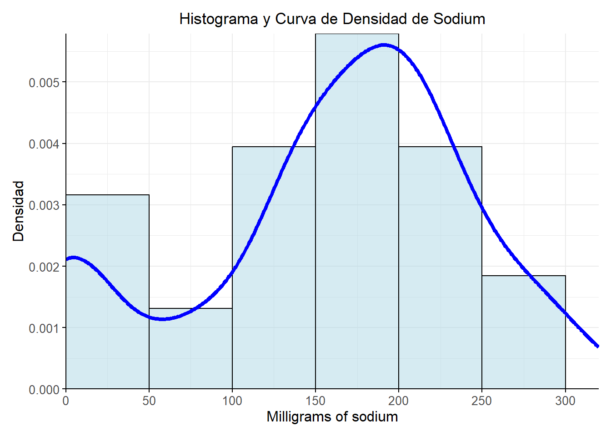

1. Base de datos
# 1. Cargar datos
cereal <- read_excel("C:/Users/acaro/Downloads/cereal.xlsx")
# 2. Tabla interactiva de la base de datos original
datatable(cereal,
options = list(
scrollX = TRUE,
pageLength = 10,
autoWidth = TRUE
),
class = "display nowrap")
La totalidad de los elementos del dataset que se observan en la
tabla, conforman la población de estudio, sobre la cual se aplicarán
técnicas de análisis descriptivo para examinar sus principales
características. Posteriormente, en el apartado inferencial del presente
estudio de caso, se realizarán estimaciones a partir de estadísticos
muestrales con el fin de obtener conclusiones sobre el comportamiento de
las variables en estudio. En general, esta base de datos está compuesta
por 77 observaciones y 16 variables, de las cuales 12 son cuantitativas
y 4 cualitativas. A continuación, se presentan todas las variables
incluidas en la base de datos junto con su respectiva descripción:
De manera descriptiva y como se mencionó previamente, se identifican
4 variables cualitativas, que corresponden a características categóricas
como el nombre del cereal, el fabricante, el tipo de cereal y la
ubicación en el estante. Estas variables siguen escalas de medición
nominales u ordinales, dependiendo de si existe una jerarquía natural
que establezca un orden entre sus categorías.
Por otro lado, se identifican 12 variables cuantitativas, que
incluyen aspectos como el contenido calórico, la cantidad de proteínas,
carbohidratos, fibra y otros nutrientes esenciales. La mayoría se mide
en escala de razón, lo que significa que poseen un punto cero absoluto y
permiten comparaciones proporcionales. Sin embargo, las variables
“vitamins” y “rating” siguen una escala de intervalo, lo que implica que
pueden analizarse en términos de diferencias relativas, pero su valor
cero no representa una ausencia real de la característica medida.
2. Tabla de frecuencia para la variable mfr (Manufacturer of
cereal)
Teniendo en cuenta el apartado anterior, la variable
mfr es cualitativa
nominal, por lo que para analizar la distribución de
frecuencias de los fabricantes se calcularán únicamente las frecuencias
absoluta y relativa. Debido a que esta variable no tiene un orden lógico
entre sus categorías, no es necesario calcular la frecuencia acumulada,
ya que las observaciones son independientes y no presentan una
progresión natural. A continuación, se presenta la tabla de frecuencias
para la variable correspondiente a los fabricantes de cereales:
# 1. Vector para cambiar las abreviaturas de los fabricantes por los nombres originales
fabricantes <- c("A" = "American Home Food Products",
"G" = "General Mills",
"K" = "Kelloggs",
"N" = "Nabisco",
"P" = "Post",
"Q" = "Quaker Oats",
"R" = "Ralston Purina")
# 2. Cálculos para la creación de la tabla de frecuencias
tabla_frecuencia <- cereal %>%
count(mfr) %>%
mutate(
mfr = fabricantes[mfr],
`Frecuencia Absoluta` = n,
`Frecuencia Relativa` = round(n / sum(n), 2),
`Porcentaje (%)` = paste0(round(`Frecuencia Relativa` * 100, 1), "%")
) %>%
select(mfr, `Frecuencia Absoluta`, `Frecuencia Relativa`, `Porcentaje (%)`) %>%
arrange(desc(`Frecuencia Absoluta`)) %>%
bind_rows(summarise(., mfr = "Total",
`Frecuencia Absoluta` = sum(`Frecuencia Absoluta`),
`Frecuencia Relativa` = sum(`Frecuencia Relativa`),
`Porcentaje (%)` = "100%"))
# 3. Configuración de estilo y estética de la salida
tabla_frecuencia %>%
kable(caption = "Tabla de Frecuencia de Fabricantes de Cereal", align = "cccc") %>%
kable_styling(full_width = FALSE, bootstrap_options = c("striped", "hover", "condensed")) %>%
row_spec(0, background = "#D9D9D9", bold = TRUE, extra_css = "border: 1px solid black !important;") %>%
row_spec(nrow(tabla_frecuencia), bold = TRUE, extra_css = "border: 1px solid black !important;") %>%
column_spec(1:4, border_left = TRUE, border_right = TRUE) %>%
kable_classic(full_width = FALSE, html_font = "Cambria")
Tabla de Frecuencia de Fabricantes de Cereal
|
mfr
|
Frecuencia Absoluta
|
Frecuencia Relativa
|
Porcentaje (%)
|
|
Kelloggs
|
23
|
0.30
|
30%
|
|
General Mills
|
22
|
0.29
|
29%
|
|
Post
|
9
|
0.12
|
12%
|
|
Quaker Oats
|
8
|
0.10
|
10%
|
|
Ralston Purina
|
8
|
0.10
|
10%
|
|
Nabisco
|
6
|
0.08
|
8%
|
|
American Home Food Products
|
1
|
0.01
|
1%
|
|
Total
|
77
|
1.00
|
100%
|
A partir de la tabla de frecuencias anterior, se observa una evidente
concentración de la oferta de cereales en dos fabricantes: Kellogg’s
(30%) y General Mills (29%), que en conjunto representan casi el 60% del
total de productos registrados. Esto indica que, en un proceso de
selección aleatoria, la probabilidad de que un cereal pertenezca a uno
de estos dos fabricantes es mayor debido a su mayor representación en la
base de datos en comparación con sus competidores. Por otro lado, a
medida que se desciende en la tabla, las frecuencias relativas
disminuyen progresivamente, con fabricantes como Post (12%) y Quaker
Oats (10%) aún manteniendo una presencia considerable, mientras que
Nabisco (8%) y American Home Food Products (1%) tienen la menor
representación. Esto sugiere una distribución desigual de la oferta,
donde unos pocos fabricantes dominan el mercado, reflejando un patrón de
concentración. Por tanto, desde una perspectiva probabilística, en un
proceso de muestreo, la probabilidad de que un cereal seleccionado
pertenezca a un fabricante determinado dependerá de su representación en
la población, lo que implica que los fabricantes con mayor frecuencia en
los datos tienen una mayor probabilidad de aparecer en la muestra.
3. Tabla de contingencia de las variables mfr (Manufacturer of
cereal) y type.
# Crear la tabla de contingencia
tabla_contingencia <- as.data.frame.matrix(table(cereal$mfr, cereal$type))
colnames(tabla_contingencia) <- c("Frío", "Caliente")
tabla_contingencia <- tabla_contingencia %>%
mutate(
Fabricante = fabricantes[rownames(tabla_contingencia)],
Total = Frío + Caliente
) %>%
relocate(Fabricante)
rownames(tabla_contingencia) <- NULL
# Crear la fila de totales
fila_totales <- data.frame(
Fabricante = "Total",
Frío = sum(tabla_contingencia$Frío),
Caliente = sum(tabla_contingencia$Caliente),
Total = sum(tabla_contingencia$Total)
)
# Unir la tabla con la fila de totales
tabla_contingencia_final <- bind_rows(tabla_contingencia, fila_totales)
#Configuración de estilo y estética de la salida
tabla_contingencia_final %>%
kable(
caption = "Tabla de Contingencia entre Fabricante y Tipo de Cereal",
align = "c"
) %>%
kable_styling(full_width = FALSE, bootstrap_options = c("striped", "hover", "condensed")) %>%
row_spec(0, background = "#D9D9D9", bold = TRUE, extra_css = "border: 1px solid black !important;") %>%
row_spec(nrow(tabla_contingencia_final), bold = TRUE, extra_css = "border: 1px solid black !important;") %>%
column_spec(1:ncol(tabla_contingencia_final), border_left = TRUE, border_right = TRUE) %>%
kable_classic(full_width = FALSE, html_font = "Cambria")
Tabla de Contingencia entre Fabricante y Tipo de Cereal
|
Fabricante
|
Frío
|
Caliente
|
Total
|
|
American Home Food Products
|
0
|
1
|
1
|
|
General Mills
|
22
|
0
|
22
|
|
Kelloggs
|
23
|
0
|
23
|
|
Nabisco
|
5
|
1
|
6
|
|
Post
|
9
|
0
|
9
|
|
Quaker Oats
|
7
|
1
|
8
|
|
Ralston Purina
|
8
|
0
|
8
|
|
Total
|
74
|
3
|
77
|
El análisis de la tabla de contingencia entre el fabricante y el tipo
de cereal revela una marcada preferencia por la producción de cereales
fríos, con 74 productos en esta categoría, lo que representa un 96.1%
del total, en comparación con los cereales calientes, que son
considerablemente menos comunes y apenas suman 3 productos (3.9%) entre
todos los fabricantes. Kelloggs y General Mills lideran la producción
con 23 y 22 cereales fríos, respectivamente, sin ofrecer opciones en la
categoría caliente. En cambio, empresas como Nabisco, Quaker Oats y
American Home Food Products han diversificado su portafolio al incluir
al menos un producto caliente, aunque en cantidades mínimas. Quaker Oats
presenta una combinación de 7 cereales fríos y 1 caliente, mientras que
Nabisco tiene 5 fríos y 1 caliente. American Home Food Products, en
particular, es el único fabricante que únicamente ofrece un cereal
caliente, lo que podría sugerir una especialización en este tipo de
producto, diferenciándose del resto de competidores que priorizan la
producción de cereales fríos, aunque sigue teniendo una participación
muy reducida. Desde un aspecto descriptivo estadístico, lo anterior
sugiere que la oferta de cereales está altamente concentrada en
productos fríos, posiblemente debido a la demanda del mercado o a
factores relacionados con hábitos de consumo que favorecen este tipo de
producto.
4. Medidas de tendencia central y de dispersión de la variable
sodium (milligrams of sodium)
# 1. Extraer la variable de interés (contenido de sodio en cereales)
variable_s <- cereal$sodium
# 2. Crear un dataframe que contenga los parámetros de la variable de interés
tabla_medidas <- data.frame(
Medida = c("Media", "Mediana", "Moda", "Varianza", "Rango", "Coeficiente de Varianza"),
Valor = c(
round(mean(variable_s, na.rm = TRUE), 2), #Media
round(median(variable_s, na.rm = TRUE), 2), #Mediana
round(as.numeric(names(which.max(table(cereal$sodium)))), 2), #Moda
round(var(variable_s, na.rm = TRUE), 2), #Varianza
round(max(variable_s, na.rm = TRUE) - min(variable_s, na.rm = TRUE), 2), #Rango
round((sqrt(var(variable_s, na.rm = TRUE)) / mean(variable_s, na.rm = TRUE)) * 100, 2)
)
)
# 3. Configuración de estilo y estética de la salida
tabla_medidas %>%
kable(
caption = "Medidas de Tendencia Central y Dispersión",
col.names = c("Parámetro", "Valor"),
align = "c"
) %>%
kable_styling(full_width = FALSE, bootstrap_options = c("striped", "hover", "condensed")) %>%
row_spec(0, background = "#D9D9D9", bold = TRUE, extra_css = "border: 1px solid black !important;") %>%
column_spec(1:2, border_left = TRUE, border_right = TRUE) %>%
kable_classic(full_width = FALSE, html_font = "Cambria")
Medidas de Tendencia Central y Dispersión
|
Parámetro
|
Valor
|
|
Media
|
159.68
|
|
Mediana
|
180.00
|
|
Moda
|
0.00
|
|
Varianza
|
7027.85
|
|
Rango
|
320.00
|
|
Coeficiente de Varianza
|
52.50
|
Como se observa, la anterior tabla muestra los parámetros
poblacionales con respecto a la variable de contenido de sodio en los
cereales, de los cuales podemos evidenciar que la media es de 159.68 mg,
lo que indica el promedio de sodio por porción, mientras que la mediana
es de 180 mg, lo que sugiere que al menos la mitad de los cereales
tienen un contenido de sodio igual o superior a este valor. Con respecto
a la moda, esta es igual a 0 mg, señalando que la categoría más
frecuente de sodio en los cereales registrados corresponde a productos
sin sodio.
En cuanto a las medidas de dispersión, se puede observar que la
varianza de 7027.85 y el amplio rango de 320 mg indican diferencias
significativas en los niveles de sodio entre los diferentes cereales.
Además, considerando un coeficiente de variación del 52.50%, se
evidencia que la variabilidad relativa con respecto a la media es
considerablemente alta, lo que implica que no existe una concentración
uniforme de los valores alrededor del promedio. Esto sugiere que los
fabricantes producen productos con distintas concentraciones de sodio,
probablemente para adaptarse a diferentes preferencias de los
consumidores o necesidades alimentarias.

El histograma revela que la mayoría de los cereales tienen un
contenido de sodio entre 100 y 250 mg, con un pico alrededor de los 180
mg, que coincide con el valor de la mediana (180.00 mg). Sin embargo, al
comparar la media (159.68 mg) con la mediana y la moda (0.00 mg),
notamos que estos valores no coinciden. En una distribución normal, la
media, la mediana y la moda deberían ser iguales o muy cercanas entre
sí, pero en este caso, la moda es 0.00 mg, mucho más baja que la media y
la mediana, lo cual sugiere que los datos están sesgados, con una mayor
concentración de valores bajos o ceros en la distribución. Así que,
aunque el pico del histograma está cerca de 180 mg, la presencia de
cereales con contenido de sodio cercano a cero y la diferencia entre los
valores de la media y la mediana indican que la distribución no es
simétrica, y podría estar ligeramente sesgada hacia la izquierda.
Con lo que respecta a la variabilidad de la distribución, esta es
evidente, puesto que los valores van desde 0 mg hasta más de 300 mg, lo
que indica que los niveles de sodio en los cereales no están
concentrados en un rango estrecho, sino que presentan diferencias
significativas entre productos. Asimismo, la presencia en la base de
datos de cereales sin sodio y otros con contenidos considerablemente
altos acentúa el hecho de que no hay homogeneidad en el contenido de
sodio, sino una amplia diversidad de formulaciones, lo cual contribuye
al incremento de la variabilidad.
5. Desviación estándar para la variable sodium (milligrams of
sodium)
Varianza_sodium <- var(cereal$sodium)
Desviacion_sodium <- sqrt(Varianza_sodium); Desviacion_sodium
## [1] 83.8323
Una desviación estándar de aproximadamente 83.83 mg del contenido de
sodio indica que hay una variabilidad considerable de los datos con
respecto a la media, lo cual sugiere, como se mencionó previamente, que
hay productos con ausencia de sodio y otros con un contenido
significativamente mayor. Esto refleja una notable heterogeneidad entre
los cereales considerados en la base de datos con respecto a esta
variable.
